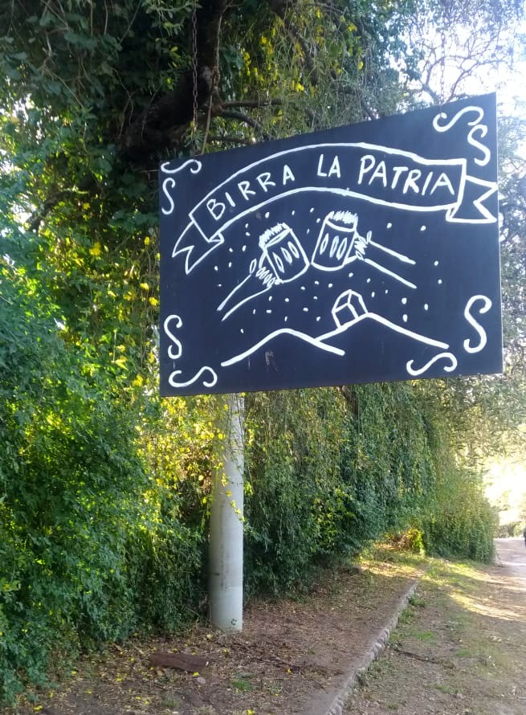

Itabier
Seu mestre cervejeiroAqui você vai tirar suas dúvidas e terá informações sobre o mundo da fabricação da cerveja, os estilos mais comercializados, e muito mais com o contato direto com o mestre cervejeiro da Itabier.
| Estilos | Cor | ABV | IBU |
|---|---|---|---|
| Session IPA | 7.8 SRM | 5.2 % | 36 |
| American Amber Ale | 17.0 SRM | 5.0 % | 33 |
| APA | 7.5 SRM | 4.8 % | 31 |
| American Wheat | 5.7 SRM | 4.8 % | 26 |
| Belgian Pale Ale | 10.8 SRM | 4.9 % | 24 |
| Hoppy Golden | 5.5 SRM | 4.8 % | 22 |
| American Lager | 5.2 SRM | 4.3 % | 10 |
!Cheers!
Buscamos através de boas práticas produzir cervejas bem equilíbradas entre os maltes e lúpulos, gerando estilos com alta drinkability.
Nossa elaboração é de forma caseira, ou seja, as produções são restritas, para manter o nível de exclusividade, o que gera produtos com sabores peculiares, mesmo que o estilo da cerveja seja algum já conhecido.
Para ter mais informações sobre cada estilo e quais estão a disposição no momento, click no menu produtos ou nos ícones.
“A cerveja, se bebida com moderação, torna a pessoa mais dócil, alegra o espírito e promove a saúde” – Thomas Jefferson
Porque a cerveja artesanal é mais saudável?
As cervejas artesanais são produzidas apenas com ingredientes naturais, eles são:
- Água
- Malte
- Lúpulo
- Levedura
Isso porque em 23 de abril de 1516 foi criada por Guilherme IV, duque da Baviera, a lei da pureza alemã (ou Reinheitsgebot na língua local) é uma regulamentação que serve para determinar o que uma boa cerveja deve ter e como ela deve ser elaborada. E assim é produzida a Itabier, utilizando os melhores lúpulos do novo e velho mundo, maltes alemães e belgas e a nossa puríssima água do Aqüífero Guarani.
20/10/2019 - Primeira brassagem, estilo produzido Hoppy Golden
“Um pouco de cerveja é um prato para um rei.” – William Shakespeare
Algumas de nossas receitas vem de Córdoba na Argentina, e foram elaboradas por grandes mestres da cervejaria Birra La Patria, aonde utilizam ingredientes especiais selecionados de maneira individual e estudados para combinar a perfeição durante anos.
E nós buscamos reproduzir fielmente cada ingrediente e seus respectivos processos, mas também contamos com receitas próprias, tentando aplicar nossas habilidades criativas para fazer cervejas únicas e buscando fortalecer a nossa escola brasileira.